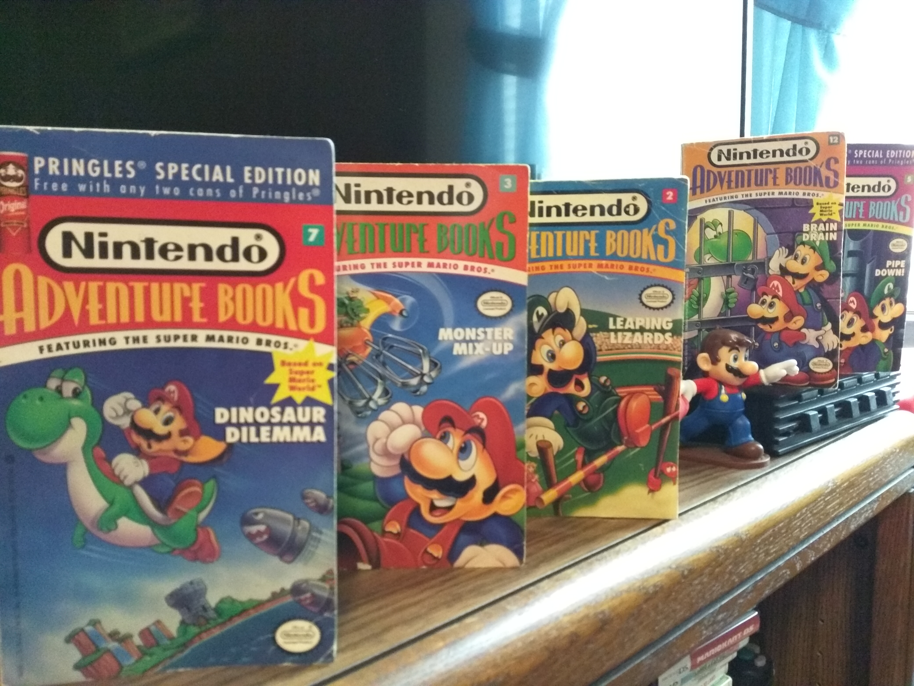
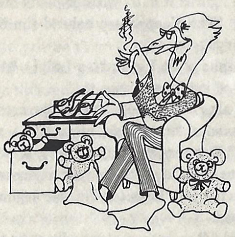
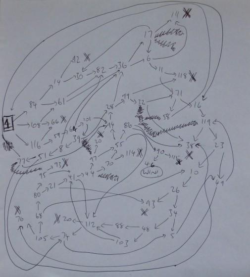
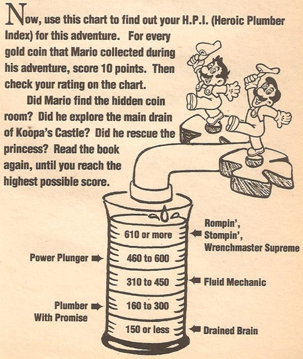
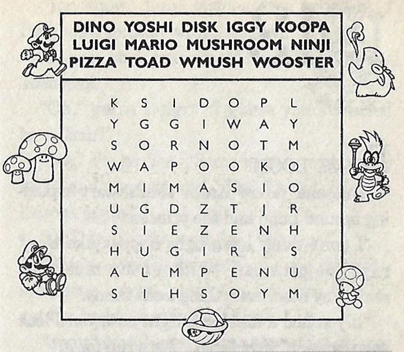

This article is a general overview of the Mario themed Nintendo Adventure Books, a more opinion based companion of my guide page. As you will note on my walk through page, the quality varies. There WILL be spoilers, so beware.
Plots: We have zany stories redolent of the cartoons and comics. Navigate the book and solve puzzles to bust Bowser and his Koopalings- usually. Our first book, Double Trouble is a banger premise wise, but doesn't go as far as it could have with the evil clone plot. Thankfully Brain Drain, a much later book uses radio controlled body switching to tell a better story. Neither have any relation to Monster Mix-Up though, where Bowser is making sideshow attractions out of hapless folks. Doors to Doom has the Mario brothers suffer at the hands of an evil genius, with an abrupt swerve at the end! Koopa Kapers is about Wendy being an independent villainess, I mean, we guess. Read it to see what I mean. Unjust Desserts is a Fantastic Voyage parody whether you knew you wanted that or not. There's more. Overlapping with our other plots, it's a game of save the damsel at moments. That damsel is rarely Peach however as a curious anecdote.
Stories take place around the Mushroom World (based on Super Mario Bros 3) or Dinosaur Land (based on Super Mario World). Some books play with the environment more than others, inventing areas and points of interests, while others use more basic descriptions of the settings and typical Mario geometries. Mario's world is rife with opportunity to present diverse obstacles and such, so no book should ever lack there.
He WILL end your game. (Source:Mariowiki)
Characters: Mario and Luigi paired up means funny banter and antics. You'll love it. When either are going solo it can work paired with Toad, but Yoshi more of a misbehaving pet than partner in this series. Secondary characters like Princess Peach, her father, and else are typically in the background unless kidnapped/transformed/ victimized somehow. It's fine. The Koopalings will harass our heroes more than Bowser on average. Ludwig in Pipe Down! and Iggy in Double Trouble/ Leaping Lizards have their personality incorporated in, while the rest operate a little more generically in their dastardliness. Other villains include a Goomba scientist that's secretly trying to get you to win the Golden Mushroom award, a childish Magikoopa in Dinosaur Land, and I will include Dr. Shrinkasaurus from Brain Drain. I'm serious. I rate this well enough for the era.
Structure: We have two styles they go for. Type A is a 'classic' CYOA journey, plunging you into a maze of pages. Expect loopbacks by design and recognize that you might abruptly stumble into obstacles or item checks you can't handle. I make it sound scary, but this series is light and forgiving by game book standards. At the end things get more linear I've found. Type B adventures start comparatively linear from the jump, never letting you get lost despite detours, but often you have options to eke out victory at the end. The score might suffer though. More later.
Both styles have one 'good' and many 'bad' endings. There are no neutral ones, at least intentionally. With that said, I expect events to be interesting whether it's a positive or negative for the character. I have a better opinion overall of type B books. How satisfied I was or not with the conclusion is what sticks with me more than the journey, plus our writers were hit or miss with the maze pathing. Let's single some out:
This is Monster Mix-Up's ball of chaos. (Source:gamesasylum)
Book 3: Monster Mix-Up was difficult to navigate as a kid. The settings looked the same, innocuous choices were deadly, and you can wander in circles forever. From my modern perspective however, it's decently forgiving with an unnaturally single item check. Fail it? You won't die for that either, just be careful searching for it. (See my guide.) Dinosaur Dilemma was purchased while I was much older, yet still wholly unfamiliar with the rest of the series, giving me flashbacks of Monster Mix-Up on first read. Well, there's no twist, except that it inspired me to make guides in the first place. Book 2: Leaping Lizards is a type B on a set journey, SOME optional scenery on alternate reads, but a fantastic ending full of different events to discover. Pages may reward you points, and it's not uncommon to visit the same one multiple times. It's a flaw if score should matter as we'll cover later, so go ahead and count the points again.
Puzzles: On the main page we categorize the puzzle types. Ideally we want to see them all, right? But it never works out that way. Some books tie the puzzles in closely to the theme and/or the event the protagonist has just encountered. Sound really obvious? Maybe not. Some puzzles have no connection to what's going on. Others include errors or poor instruction, or imply that they'll give you valuable intel without delivering. See my explanation of 'Just a Hint' puzzles on the main. The idea of your path being determined on how well you did, 'variable scoring' is cute in theory, but pay walling necessary items is rough. Remember that not all puzzles are skill checks. Some make you guess. Rarely we have red herring page options, leading to ‘You can’t get this score!’ pages. The light hearted assumption is that they think you're bad at math, maybe accurate for me some, or you cheated. The experience will be self contained, and outside of one puzzle in Double Trouble you won't need any outside tools to solve them. Heck, you don't need much if any Mario knowledge either, a missed opportunity in my opinion.
Think before you pick a lane. It may affect if the high score or the path you need is obtainable. (Source:Mariowiki)
Items: Sometimes it's Mario powerups you are used to and other times random objects to fit a theme. Or random. All books require interaction at some point, though some focus on it more than others. Reaching a check unprepared is always bad, but it doesn't always spell the end of the journey. Explore the pages thoroughly to stay out of trouble and score better generally. An 'Item of Doom' mechanic can come up and kill you. (Unless it's Monster Mix-Up, where you can choose to not use the item. Note that the book deviously implies that you should though..) Nothing hints at these trap items, so it sucks the first time it gets you. The otherwise solid Flown the Koopa book has one of the roughest examples, a doom item nestled in the puzzle that ALSO contains a required one. Last to include here is that bad choices can semi rarely take away your item. The repercussions down the road can be serious. I never understood the inconsistencies. You'd think there were dozens of writers and not two.
A typical score card. This one requires the reader to convert their coins to points. Take note of their little 'hints'. For this particular book, one of these is out right bad advice and the other frivolous at best..
Scoring and Hints: Books reward points or coins that later convert to points by base 10s or something else easy, and this determines ranking. The whole system was hardly tested, several books giving you the max for simply reaching the end, and others nigh impossible to add up enough points 'naturally'. You'd need to loop and farm points. If that sounds fair game fine, but as my guides point out it doesn't feel intentional most often than not. Don't take the score too seriously. Even the best books falter in this spot.
Hints range from pertinent to redundant to outright bad advice. Yes, we have inaccurate tips in the back of some books, prodding you to take dangerous or time wasting paths. Peculiarly, how many you get depends on book and no, there's no correlation with book difficulty and amount of or quality of hints. Leaping Lizards is a good book, but the hints are rubbish. I've also beat up on Dinosaur Dilemma, but resoundingly its hints are helpful. Koopa Kapers forgoes assisting you with its tricky navigation, instead only hinting about point opportunities or stating the obvious. You don't know what you'll get.
It's simple. It's clean. It's.. stock photos. (Source:Mariowiki)
Illustrations: Expect official and modified stock art of Mario and crew, along with original characters and assets on occasion. The settings are always originally drawn so look forward to that. The same goes for puzzles. I'd only call one or two drawn 'badly', and the error there is more with the written portions if anything. Aside from showing the wrong character for what the words suggest, I rate this satisfactory overall.
Concluding thoughts: *Drumroll*... I love this collection. Most of the books are genuinely engaging, unique, and this hasn't bee replicated with Mario media. I am sure seasoned choose-your-own-adventure fans might scoff at a few things here, but any Mario fan who is even vaguely interested should check them out. For more of my thoughts on them individually, and to understand a little more how I break down the puzzles and structure, please see my guide page HERE. Thanks for reading!
This isn't 1991, so you have a lot of online options! (Source:Mariowiki)
-Demian's Gamebook page here and here: These pages cover briefly all of the books with Demian's and a few other's opinions. I suspect our methodology differs, but feel free to compare. The second page contains scans of some of the score cards and some visual differences between the American, Pringles, and British versions of the books.
-Mariowiki Nintendo Adventure Books entries. There are unique pages for all books as well as entries on some key items.
-Spectrum of Madness blog. More opinions on the books, going just a bit more in depth than the others and rating them somewhat.
-Gamesasylum coverage and map. Brief coverage on the series but also the home of the only map of these books aside from my own!
-VoVatia 'Nintendo in Book Form' coverage: More coverage briefly on each book.
-A TvTropes page that will ruin your life! Has spoilers.
-Archive.org scans of Double Trouble. Some scans are a little grainy but it can get you through it.
-Imgur album photo scans of Flown the Koopa. The resource I used to create my guide.